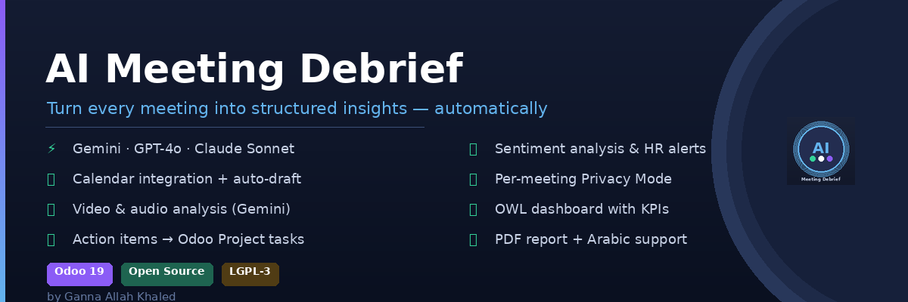

AI Meeting Debrief connects directly to Odoo Calendar and automatically creates a debrief record when your meeting ends. Paste a transcript (or upload a recording for Gemini users), and the AI extracts action items, decisions, and a full sentiment analysis in seconds.
| Provider | Model | Video Support |
|---|---|---|
| Google Gemini | gemini-2.5-flash-lite | Yes |
| OpenAI | gpt-4o | Text only |
| Anthropic Claude | claude-sonnet-4-6 | Text only |